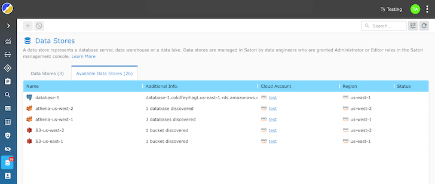
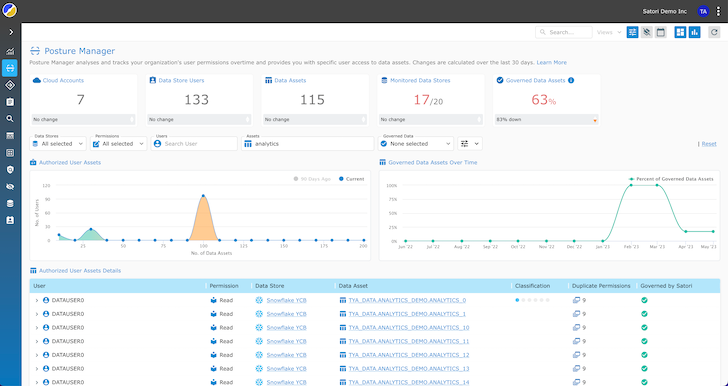

Connect with us!
900,000 Followers

1,950,000 Followers
480,000 Followers
20,900 Subscribers
145,000 Followers
© The Hacker News, 2023. All Rights Reserved.
Ensuring sensitive data remains confidential, protected from unauthorized access, and compliant with data privacy regulations is paramount. Data breaches result in financial and reputational damage but also lead to legal consequences. Therefore, robust data access security measures are essential to safeguard an organization's assets, maintain customer trust, and meet regulatory requirements.
A comprehensive Data Security Platform is essential for full visibility and control of sensitive data. One example is Satori's Universal Data Permissions Scanner (UDPS), an open-source authorization analysis tool. UDPS, available on GitHub, enables universal visibility into data access permissions across various data stores. With this tool, it's easier to identify who has the potential to access sensitive data, which can help organizations take a proactive approach to enhancing their security posture, streamline compliance, and ensure well-governed data access.
In managing data access permissions across large volumes of data, data engineers have to deal with several challenges.
One such challenge is the complexity of granting and revoking permissions to various users across many data repositories. As organizations scale up their operations and data grows exponentially, keeping track of who has access to what becomes increasingly challenging.
This complexity can lead to errors, security vulnerabilities, and difficulties in maintaining an audit trail of data access, which is crucial for compliance and security purposes. Data engineers are often tasked with maintaining a fine balance between providing access to authorized users and safeguarding data from unauthorized access.
The data access permissions management landscape has become more complicated in recent years due to the widespread adoption of cloud computing. Data engineers face a highly distributed data landscape, with data now residing in on-prem data centers, multiple cloud platforms, and edge devices. Ensuring data security and governance across these diverse environments requires a more unified approach to data access permissions.
The dynamic nature of the cloud means that traditional access control models may no longer suffice, and data engineers must adopt new paradigms that include granular control, visibility, and governance.
Satori's open-source UDPS takes a proactive and comprehensive approach to data access authorization. It scans and analyzes the permissions model of each data platform to retrieve a human-readable list of users and their access level to data assets, including database tables, cloud storage buckets, files, and more.
Instead of requiring data engineers to navigate the intricacies of each individual data store's access controls, UDPS provides a unified platform to view and manage data permissions across all data repositories. Data engineers no longer need to use different access control mechanisms, reducing the potential for errors and unauthorized access.
The standout feature of UDPS is its universal visibility into data access permissions. After scanning all databases, data warehouses, cloud accounts, and data lakes, UDPS analyzes the permissions and retrieves a list of users, their access levels, and what they have access to.
The Universal Data Permissions Scanner is available in two ways:
1. Scan the permissions structure of a database to get the list of all users and data assets they can access.
2. Posture Manager - a fully managed SaaS solution to periodically scan, store, and visualize all users and data assets they can access.
Data engineers gain greater visibility, allowing them to quickly identify overprivileged users, unauthorized access, or unusual behavior in real time. Universal visibility simplifies the auditing process and ensures that data access remains transparent and compliant with security and privacy regulations.
Data engineers can efficiently manage data security and governance, reducing secure and compliant data access challenges.
Identifying Overprivileged Users and Reducing Security Risks: With comprehensive visibility into data access permissions, organizations can pinpoint individuals or accounts granted unnecessary or excessive access to sensitive data. By identifying and rectifying overprivileged users, businesses can reduce the risk of data breaches and unauthorized data access.
Streamlining Compliance Reporting and Privacy Law Compliance: Organizations generate compliance reports more efficiently by aggregating data access information across various repositories. This streamlines the reporting process and ensures data access aligns with regulatory requirements. Businesses can maintain compliance with data protection laws such as GDPR or HIPAA, reducing the potential for legal issues and fines.
Enhancing Data Security and Data Posture: Data engineers and security proactively address security gaps by clearly viewing data access authorizations and identifying potential vulnerabilities. Enhanced data security protects an organization's assets and preserves its reputation and customer trust in an increasingly data-sensitive world.
Detecting Unusual Behavior and Tracking Data Usage: Preserve data integrity by detecting unusual behavior and tracking data usage across complex data infrastructures. It monitors access patterns and raises alerts when deviations from the norm are detected. This proactive approach allows organizations to respond to potential security incidents swiftly, reducing the impact of data breaches or insider threats. By tracking data usage, businesses gain valuable insights into the use of their data, which can inform decision-making processes and improve operational efficiency.
Simplifying Authorization Management for Data and Security Engineers: Simplifies the intricate task of authorization management for data and security engineers. Instead of navigating multiple data repositories and access control systems, these professionals can use a centralized platform to manage and enforce data access policies. This streamlines the process, reduces the likelihood of misconfigurations, and ensures that data authorization is consistent and transparent across the organization. Simplified authorization management translates to more efficient data governance and a stronger security posture.
Enhancing Productivity: Untangling the web of permissions complexity enables seamless information sharing across departments, accelerating time-to-value. This means that data can be efficiently accessed and leveraged when needed, facilitating agile decision-making and fostering collaboration among teams. It removes the barriers that once hindered the rapid flow of information within the enterprise.
Some key insights into the ease of implementing Satori's solution:
Agentless Deployment: There is no need to install agents or additional software on your data stores or systems. This agentless approach simplifies the deployment process and eliminates the need for complex configurations or alterations to your existing infrastructure.
Zero Code Changes: It does not require any changes to existing data structures or schemas. The data remains intact and retains its structure.
User-Friendly Interface: The interface simplifies the definition and enforcement of data access policies. Security and data engineering teams can easily configure and manage fine-grained policies to control who can access specific data elements without requiring specialized coding or extensive technical expertise.
Real-time Policy Updates: Allows for real-time policy updates so that security measures are adapted on the fly to address emerging threats or changing compliance requirements. This agility simplifies the ongoing management of data security controls.
Non-Intrusive Data Encryption: Transparent data encryption that doesn't disrupt existing user interactions. Data remains accessible to authorized users without noticeable changes in how they interact.
Compatibility and Scalability: Compatible with many data stores, databases, data lakes, and cloud platforms. It also scales with your organization's needs.
Implementation is a straightforward and hassle-free process. It doesn't require alterations to your data structures or user interactions. The ease of implementation makes Satori an attractive solution for organizations looking to enhance their data security effortlessly.
Satori's Universal Data Permissions Scanner (UDPS) simplifies data access authorization complexities by providing a centralized, non-intrusive solution. It offers universal visibility into data access permissions across diverse data repositories, enabling organizations to identify overprivileged users, streamline compliance reporting, and enhance data security. It is easy to implement, with no changes to existing data structures or user interactions; read more about the UDPS in the project documentation.
Organizations can detect unusual behavior, track data usage, and simplify authorization management, contributing to a stronger security posture and streamlined data governance.
© The Hacker News, 2023. All Rights Reserved.